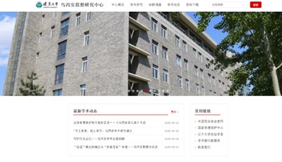
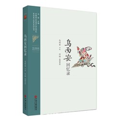
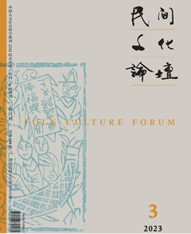
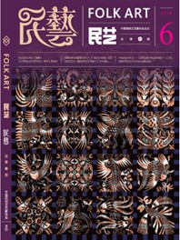
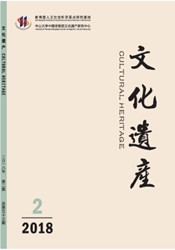

学术动态


记录非遗保护先行者的足迹——《乌丙安回忆录》书后
迈入新世纪以来，非物质文化遗产保护成为举国上下努力推进的伟大文化事业，凝聚了无数人的心血和智慧。一批各自领域内的专家学者作为先觉者、先行者加入到非遗保护的队伍中来...
阅读全文

守护文化记忆——乌丙安学术生涯回顾
乌丙安1929年生于内蒙古呼和浩特市,1953年作为首届民间文学专业研究生进入北京师范大学,师从钟敬文先生。在一系列的政治运动中,乌丙安经受了人生和学术上的考验。在无数个田...
阅读全文
俗信”概念的确立与“妈祖信俗”申遗——乌丙安教授访谈录
乌丙安教授在访谈中,通过生动的案例,回顾了其在民间信仰研究中提出"俗信"概念的背景和过程,论证了民间俗信存在的合理性。在民间信仰类项目申遗过...
阅读全文